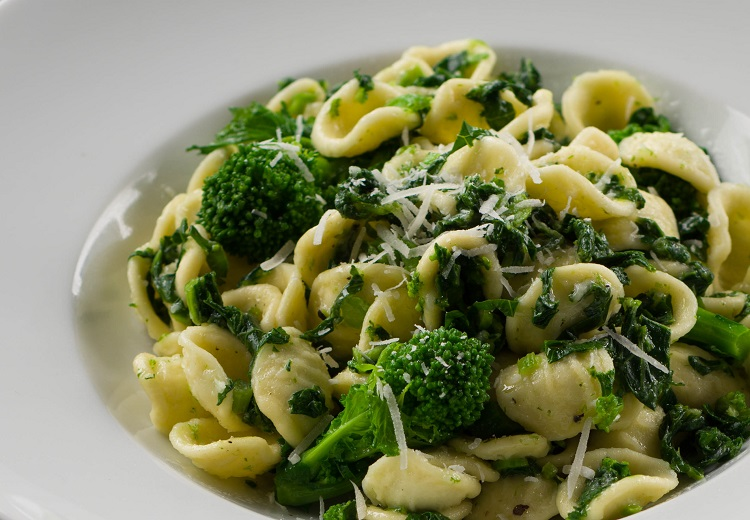
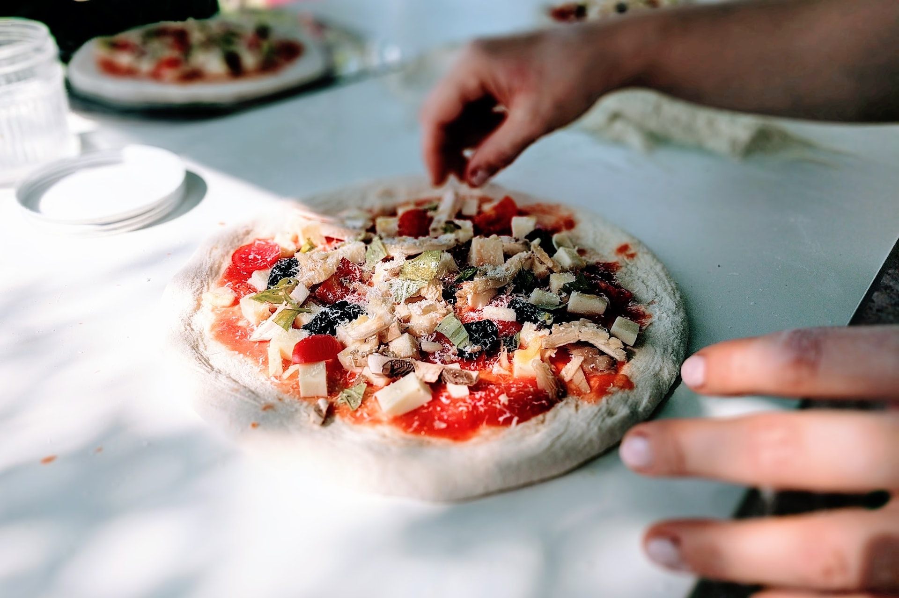
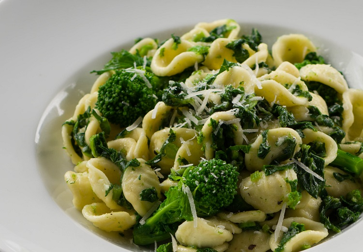
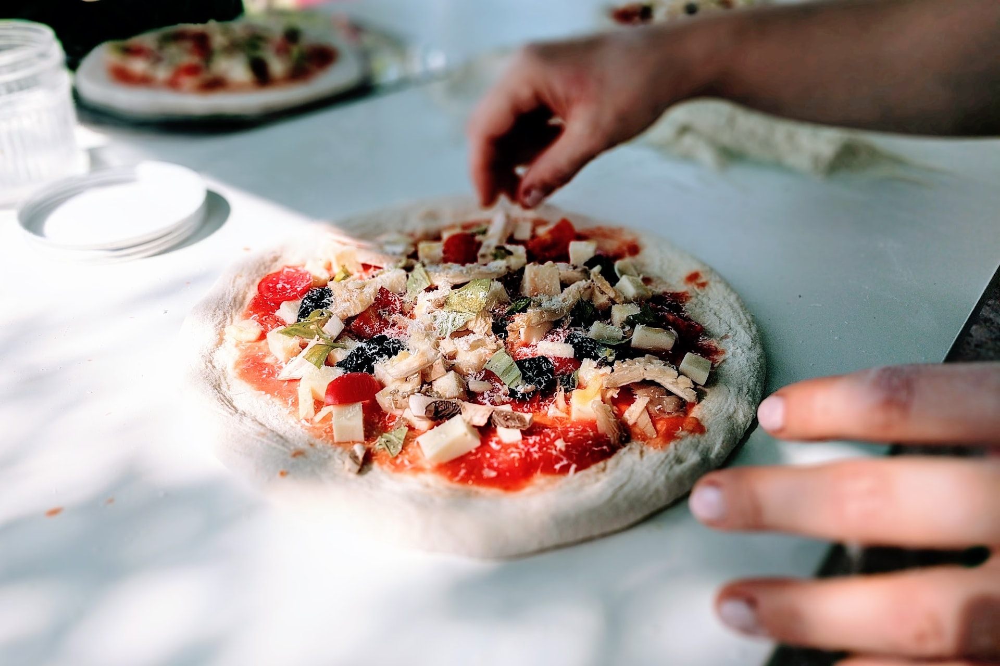

Menù
Dishes are prepared with passion and dedication by our chef
Our restaurant offers a unique experience through the traditional Apulian cuisine. Passion is the main ingredient of our job: every dish is prepared using only seasonal products from our best local farmers exclusively. You can taste fresh fish and top-quality meat dishes, like our mixed bbq made with Apulian Bombette, a rolled capocollo pork, typical of this area. We have also a fine pizza’s selection prepared with 48 hours fermentation and using only fresh ingredients.
 


